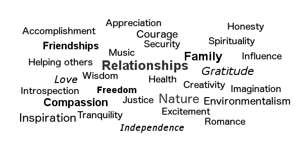

Exploring my values
When I think of the times in my life where I've been the happiest, the proudest, or the most satisfied, these are the following values that come to mind: 
Compassion
Having compassion for others is so important, because it allows you to empathize with someone else, understand where they are coming from and realize that we all have different experiences, strengths, and weaknesses.
Compassion allows us to see the good that lives within every person, then instead of so quickly judging others, we can begin to understand to their world view and be able to relate to them.
Values in my life:
In general, I try to live up to these values: 5.
Disagree 1 ----- 2 ----- 3 ----- 4 ----- 5 Agree
Advice:
What was the last topic that someone asked for your advice on? Not sure, but this made me realize that I often times dole out advice even when I'm not asked! I hope that's not frowned upon. I just like imparting whatever information/wisdom/knowledge I have.
The last time I was actually asked for advice was probably about switching careers.
Values and Stereotype threat:
How do you feel when you think about your values? When I think about my values, I feel like I am refocusing my mind on what is important in life.
Do you think it can help you mediate stereotype threat if you recognize you feel it? I'm not sure if thinking about my values will help me mediate stereotype threat. I think it may either distract me from feeling the threat or maybe even make me feel like some of my values are being threatened!
Can you think of any other exercises you can use to help you when you are feeling down (for whatever reason) at DBC? I think if I am feeling down, I would take a quick break to do a mindfulness exercise. I found that being able to pause in the moment and take things into perspective helps to sort out the feelings from the situation and make more level-headed decisions.